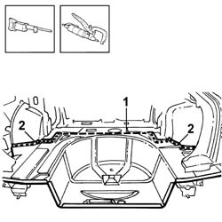
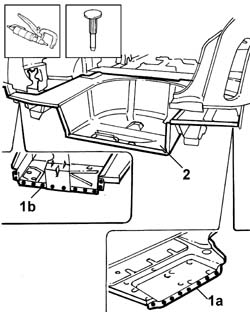
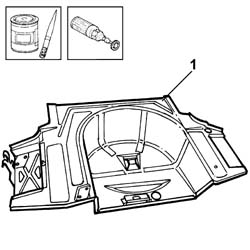
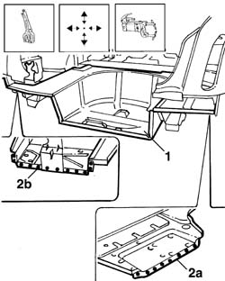
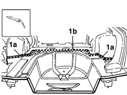

7210B55 BOOT FLOOR
- Path
- Procedures > 72 panels and frames > 7210 REMOVING REFITTING > 7210B STRUCTURAL ELEMENTS (CENTRE AND REAR section) > 7210B55 BOOT FLOOR
- Kind
- repair procedure (removal / refitting; the operation number is the code)
- Applies to
- all engines; all production periods
- Interactive page
- https://sloeber94.github.io/elrnDB-lThss/en/#/501044
Applies to: all engines; all production periods
- La vettura prima dell'intervento deve presentarsi nelle seguenti condizioni: paraurti staccato, traversa sacrificale posteriore staccata, rivestimento posteriore staccato
Applies to: all engines; all production periods
 Removing
Removing
 Refitting
Refitting- Check whether the components connected are distorted through the bodyshell alignment measurements using suitable test equipment (test benches, templates or jigs).
- Carry out any bodyshell straightening operations before cutting the component.
1. Cut in the area shown in the diagram using a power saw.
2. Remove the spot welds shown in the diagram using a chamfering machine and a drill.

Applies to: all engines; all production periods
1. Remove the welds in areas (1a) and (1b) using a chamfering machine.
2. Detach the boot floor and remove it.

Applies to: all engines; all production periods
Refitting
Removing- Straighten the edges of the panel and grind the areas of the bodyshell affected and apply electro-galvanizing paint.
1. Remove the anti-corrosion treatment along the perimeter of the replacement part using a rotary brush and apply electro-galvanizing paint.

Applies to: all engines; all production periods
1. Position the replacement part and secure it using self-locking clamps.
- Check that the replacement part is correctly positioned.
2. Spot welds in areas (2a) and (2b).

Applies to: all engines; all production periods
1. Weld in area (1a) and seam weld in area (1b).

Applies to: all engines; all production periods
- Check that the boot floor is correctly positioned.
- Level the spot welds using a disc grinder.
- Apply electro-galvanizing paint.